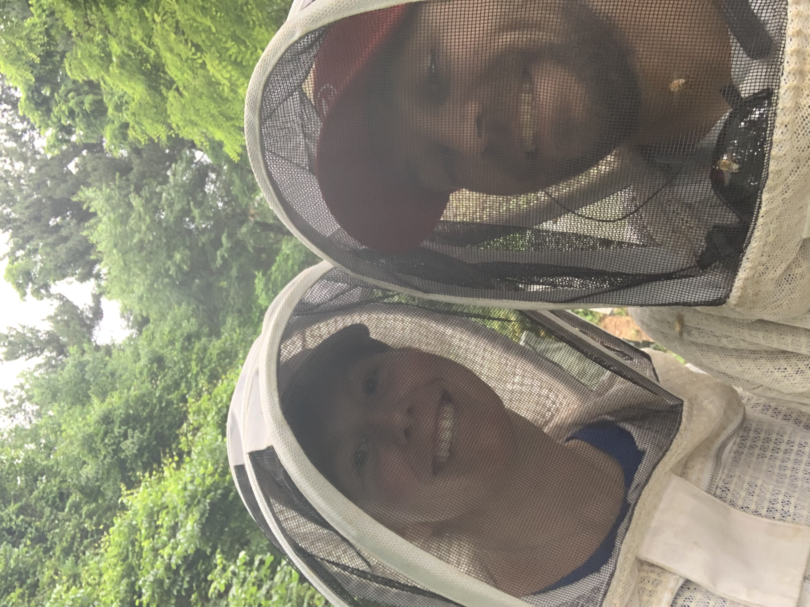
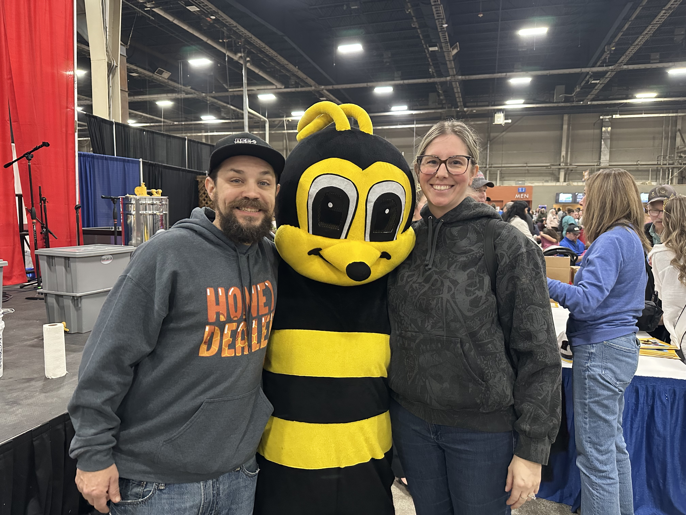

Family beekeepers in Harrisburg, PA
The Alleman Apiary is a family-run beekeeping operation in Central Pennsylvania, run by Devon and Elyse Alleman. We've been keeping bees for 10+ years, and we run multiple apiary sites across the Harrisburg area, produce raw local honey for sale at our honey stand, raise nucleus colonies and Pennsylvania queens for spring sales, and respond to honey bee removal calls throughout the region.
From a backyard hive to a working apiary
What started as a single backyard hive has grown into a working apiary with multiple sites, queen rearing, regular nuc production, and an active mentorship practice. Beekeeping for us isn't a side project — it's a real working part of our family's life and livelihood.
We're also one of the only beekeeping operations in our area that's connected to a fully licensed pest control business. Devon Alleman is a Pennsylvania-licensed pesticide applicator and Nuisance Wildlife Control Operator, running our sister business Lawns Plants & Pests LLC. That connection gives us something other beekeepers don't have: the ability to legally and competently handle stinging insects that aren't honey bees (yellow jackets, hornets, wasps), so when someone calls about a "bee problem," they get the right answer no matter what species it actually is.
It also means our pest control work is informed by beekeeping. We pick products, timing, and methods that protect pollinators — not because it's marketing, but because the bees in question often live in our own apiaries.

The whole operation
Raw local honey
Spring, summer, fall, comb, beeswax, pollen. Available at our honey stand and through partner locations across Central PA. Honey →
Live honey bee removal & free swarm collection
Throughout the Harrisburg area. Bees relocated to our managed apiaries and added to our genetic base, never exterminated. Bee removal →
Nucleus colonies & PA-bred queens
For spring sale to other beekeepers. Locally adapted, overwintered, mixed survivor genetics. Reservations open in fall. Nucs & queens →
Beekeeping mentorship & consulting
For new and developing beekeepers in Central PA. Hands-on, hive-side, real-world. Mentorship →
Sister-business pest control
Lawns Plants & Pests LLC for non-honey-bee stinging insects, lawn care, plant health care, mosquito and tick control, agricultural pest, nuisance wildlife, and pond management.
Small-batch handcrafted goods
Beeswax and propolis products — candles, salves, lip balms, and seasonal items made from our own hive products and sold at our honey stand. Inventory rotates as we make new batches.

How we work
Bees first
We don't exterminate honey bees, ever. Every removal is a relocation. Every swarm is a chance to add genetics to our operation.
Local genetics
We raise our own queens from breeding stock that has overwintered in Pennsylvania, selected for traits that matter here — overwintering ability, mite resilience, gentleness, productivity. We're not selling Southern queens with a Pennsylvania label.
Treatment-aware
Varroa mites are the single biggest threat to managed honey bees. We monitor, treat when needed, and teach other beekeepers to do the same. Pretending mites aren't a problem is how colonies die.
Honest pricing and honest answers
We tell customers what they need, not what we want to sell. Bees aren't a get-rich-quick operation, and we don't run our business like one.
Where we work
The Alleman Apiary serves Dauphin, Cumberland, Lebanon, and York Counties — including Harrisburg, Paxtang, Penbrook, Steelton, Highspire, Middletown, Hummelstown, Hershey, Palmyra, Annville, Cleona, Lebanon, Grantville, Linglestown, Colonial Park, Susquehanna Township, Lower Paxton, Camp Hill, Mechanicsburg, Lemoyne, New Cumberland, Wormleysburg, Enola, Marysville, Halifax, Millersburg, Elizabethtown, Mount Joy, Mount Wolf, Manchester, Dillsburg, Carlisle, Boiling Springs, and surrounding Central Pennsylvania communities. Honey is sold at our stand and through partners across Central PA.
Memberships & recognition
- Member of the Pennsylvania State Beekeepers Association (PSBA) — listed on the official PSBA Honey Bee Supplier map for Pennsylvania
- Active member of the Capital Area Beekeepers Association (CABA) — listed CABA swarm collector and East Shore club extractor contact
- PA Department of Agriculture-registered apiary with current inspection
- Sister business Lawns Plants & Pests LLC is a licensed Pennsylvania pesticide applicator and Pennsylvania-certified Nuisance Wildlife Control Operator
The honey stand
3502 High St., Harrisburg, PA 17109
Self-serve honey stand. Cash, CashApp, or Venmo on the honor system. Stop by anytime to pick up raw local honey from our bees.

Get in touch
Phone & text: 717-379-3248. Email: TheAllemanApiary@gmail.com. The same person who answers the phone is the same person you'll meet when we show up.
Call or Text 717-379-3248